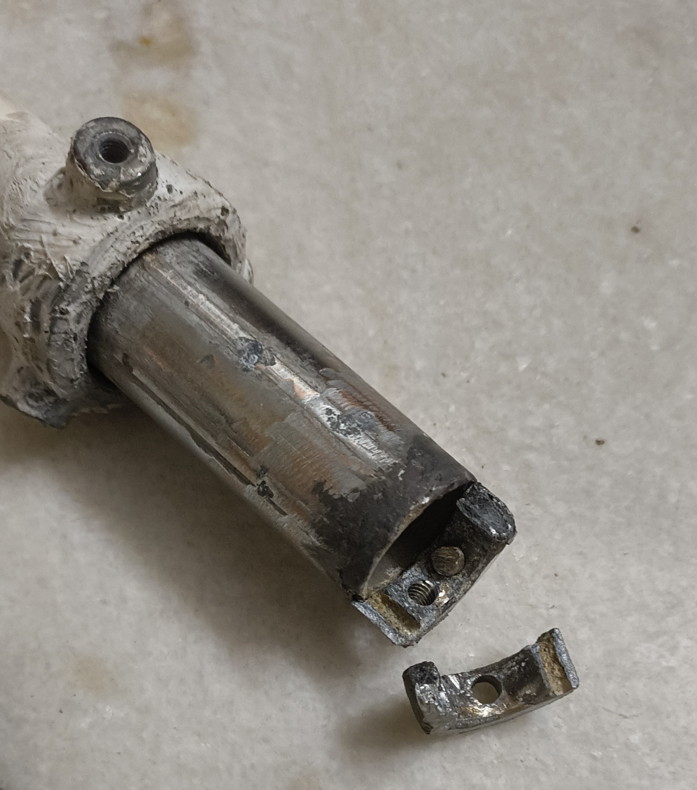
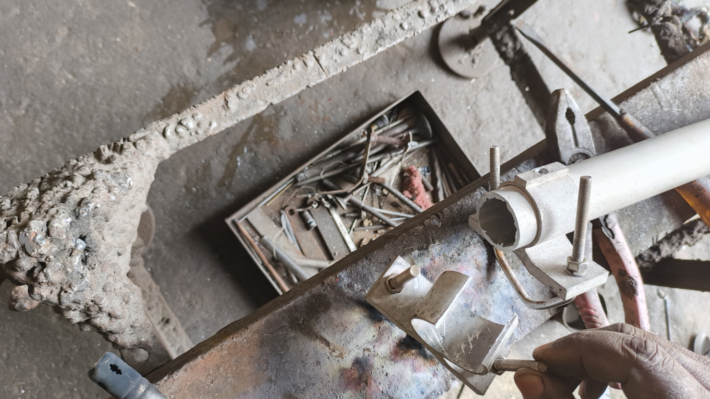

Many of you may find this interesting and may even be
useful at some point.
Signals from our VU2MWG DMR repeater were
getting weak - many stations reported getting "repeater not found".
It was decided
to replace the cable and clean up the X510 antenna. Note :
X510 was given by VU2SBU in used condition and the old cable was
given by VU2BBF Arun Kumar. The X510 had cracks in the
bottom part even while installing the antenna a while back and it
gradually widened - to a dangerous level on 23rd.
We attempted to bring the part to Aluminum welder but learnt that
the material is a die cast - actually an alloy and not pure aluminum
and hence welding did not work. The part broke apart.
|
 |
|
| .We
cleaned up the part by chipping off the corroded metal, as much as
possible, without damaging the fibre glass tube inside. The metal
part is glued very well to the fibreglass and the radial holder
above. It was apparent that any more attempt to remove the metal
will result in permanent damage to the antenna. |
 |
|
|
You may be familiar with the part in this
picture. This is the one which fixes the antenna to the mast with
clamps. This goes over the chipped off metal portion in the previous
picture and snugly fits into the slot below the radial holder part.
We decided to cut a portion of this and weld an additional piece at
the bottom (to replace the broken area indicated in the first
picture). This part is crucial as it holds the inner radiating
element with SO239 connector. |
 |
|
|
This is the replacement piece. It is
actually a sawed off portion of a piece I milled to repair a F23
antenna. Notice that the pice has couple of grub screws which will
hold the SO239 of the radiating element.
This piece costed me Rs300/- for the
material and Rs600/- for milling.
|
 |
|
|
We then welded the above part to the base
portion of the aluminum tube - see picture 3 from top. |
 |
|
|
The piece is now welded and snugly fits
over the broken metal part in picture 2. Since this part came from
the antenna holder, we had to look for alternate holding
arrangement. See the next section. |
 |
|
We broke off the clamps from the old
holder and welded it over this aluminum pipe. This tightly fits over
the whole assembly in the above picture. We are certain that this
arrangement will hold up to the elements. We intend to visit the
repeater site tomorrow 28 Jan 2025 to test and fix the antenna and
turn on the repeater. Fingers crossed.
Repeater donated graciously by
VU2AB Ram
Permission to install the repeater in his building (13th floor) by
VU3UBS Anand
Internet service for operation of the repeater provided by the
office internet VU3UBS Anand
Duplexer arranged by VU2DPN Deepan
Installation, programming, tuning and operation by VU2OW and VU2DPN
Power supply has been provided by VU3CDV Vivekanandan
Cable (LMR400) was provided by VU2BBF Arun Kumar
New Cable (LMR 400) which we are going to install tomorrow has been
provided by VU3KVB Saravanan
Antenna was provided by VU2SBU (Ramesh). It was repaired and brought
to working condition by VU2OW Rajesh
Maintenance activities carried out by VU2OW and VU2DPN
Between VU2OW and VU2DPN, 20 Man hours of
work has gone into the last maintenance on the dates mentioned above.
Total approximate expenses for this repair work is Rs2200/-.
|
 |
|
{kind=link}
{kind=link}